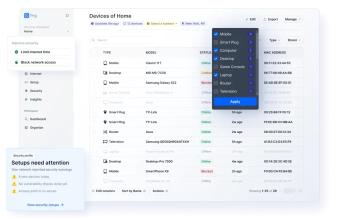
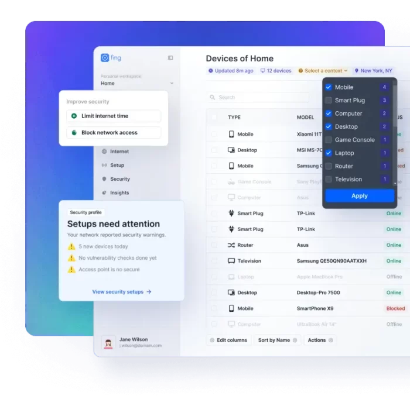

家里 Wi-Fi 到底连了多少设备？装了 Fing 终于搞清楚了
朋友说家里 Wi-Fi 变慢可能有人蹭网，我抱着试试看的心态装了 Fing。结果不仅揪出了两台陌生设备，还发现路由器本身就有两个频段在打架。这是我用了一周的真实体验。
为什么我会去装它
说实话，我之前对"网络扫描"这类工具的认知还停留在 Nmap 那种命令行黑框框——感觉是给程序员或运维用的，普通人碰不着也没必要碰。
但前段时间有个挺实在的原因逼我试试：家里的 Wi-Fi 从之前稳稳 80 多兆，突然掉到了 30 兆左右，刷视频偶尔会卡一下。我先排除了运营商的问题——插网线直连光猫测速是正常的，说明瓶颈在自家局域网里。朋友推荐我装 Fing 看看，说这个 App 扫一下就能把你家网络里所有连上来的设备列得清清楚楚，还能告诉你每台设备到底是什么型号。
这一点直接戳中了我。以前路由器管理后台也能看已连接设备列表，但那玩意儿只给一串 MAC 地址和 IP，除了能看到自己的手机和电脑，其他要么显示 "Unknown" 要么显示一个完全猜不出来的设备名。Fing 号称数据库里有 45 万种设备型号，扫完能直接告诉你"这是 iPhone 14 Pro"或者"这是小米智能音箱"——光这一点就足够让我动心了。
Fing 官网现在有 App（iOS/Android）、Desktop（Windows/macOS）和 Web 端，我先从下载拿了手机版，登录免费账号之后，主界面就一个大按钮——"Scan"。点一下，等个十几秒，结果就出来了。
第一眼：扫出来的结果比我想象的详细太多
第一次扫描的时候我正蹲在路由器旁边。看着进度条一格一格跑，心里还在嘀咕"能扫出什么花来"。
结果出来的时候我真的愣了一下——一共扫出了 17 台设备。不是那种模糊的 IP 列表，每一台都标得明明白白：三台手机、两台笔记本、一台 iPad、路由器本体、光猫、小米电视、两个智能音箱、一台 Switch、几个我自己都忘了什么时候买的智能家居传感器……甚至还有两台我完全不认识的设备，一台识别成 "Realtek 网卡的 Windows PC"，另一台只显示了 MAC 前缀是某国产厂商。

我当时第一反应是：那台 Realtek 的 PC 是不是邻居在蹭我家 Wi-Fi？我家路由器设的 WPA3 密码不算弱啊。不过后来想想，可能是我上周帮楼下邻居修过一次电脑，他可能连过一次之后密码被自动记住了还没改。不管怎样，这个发现本身就值了——以前我完全不知道自己家网络里到底有哪些设备在连。
说到识别精度，我后来专门验证了一下。Fing 不仅能说出设备型号，连设备连的是 2.4GHz 还是 5GHz 都标出来了，还能看到每台设备当前的实时网速。我家那台小米电视一直连在 2.4GHz 频段上——它就在客厅离路由器不到两米的地方，明明可以连 5GHz，它就是不连，白白浪费了 5GHz 的速度优势。这个细节如果不是 Fing 指出来，我根本不会去查。
实际用下来：挑几个印象最深的功能讲
排查网络慢的 Ping 和 Traceroute
扫完设备，接下来就是定位问题。Fing 在每台设备的详情页里都嵌了 Ping 按钮，点一下就能看到往返延迟。我 Ping 了一下我家路由器（192.168.1.1），结果平均延迟竟然有 35ms——按理说家里局域网 Ping 路由器应该在 1ms 以内才对。这说明问题真的在我家路由器这边，不是运营商。
然后我用 Fing Desktop 上的 Traceroute 功能，追踪了一下从我的电脑出去到外网的路径。结果发现数据包在经过我家路由器之后，下一跳的延迟就从 1ms 跳到了 28ms，再往后到运营商那边倒是正常了。基本锁定——路由器性能不行了或者负载太高。后来我把家里那几台不常用的智能设备断网，Ping 延迟立刻降到了 3ms 以内，外网测速也回到了 70 多兆。
说实话，Traceroute 这个功能在 Desktop 上比 App 上完整得多。App 里只能看到简化结果，Desktop 版本会把每一跳的 IP、延迟、运营商名称都列出来，一目了然。如果你真的要搞网络排查，建议还是在电脑上跑。
Pause 功能：终于能管管小孩的平板了
我朋友后来问我，Fing 除了扫设备还有什么用。我给他演示了 Pause 功能——在设备详情页点一下 Pause Internet，那台设备几秒之内就断网了，再点 Resume 立即恢复。
他眼睛都亮了。说小孩每天晚上刷平板刷到 10 点多，之前试过在路由器里设家长控制，但路由器的界面太复杂，而且设了之后全家的设备一起被断网，太不方便。现在用 Fing，只暂停小孩的 iPad 就行，大人的手机和电脑继续上网不受影响。
我自己试了一下，Pause 真的是秒生效——点完之后在 App 里能看到设备状态变成了 Paused，等了大概 3 秒钟，再 Ping 那台设备就超时了。Resume 之后，下一秒就能 Ping 通。Premium 订阅还支持定时自动恢复，比如"暂停到明天早上 8 点"，或者一键 Pause All 把所有设备都暂停。这个功能在 Premium 里才有，但对于有小孩的家庭来说值不值那点钱，我觉得见仁见智。
设备识别数据库：为什么 Fing 比别家准
我特意翻了一下 Fing 的 文档，想搞清楚它到底是怎么做到"这台就是 iPhone 14 Pro"的。
答案是三层叠加。第一层是 MAC 地址的 OUI 前缀——每块网卡出厂时烧录的前 3 字节指向厂商，这个是最基础的。但光靠 OUI 只能知道"Apple 生产的"，不知道是 iPhone 还是 iPad。所以第二层就上了机器学习——Fing 会主动发一些轻量探测包，抓 DHCP 请求里的 hostname、尝试 HTTP 请求看有没有设备特征、解析 Bonjour/mDNS 名称，把这些信号拼起来喂给训练好的分类器，就能把"Apple"细化成具体型号。第三层是社区贡献——Fing App 里有个"识别错了"按钮，用户手动修正品牌型号之后，这些修正会回流到数据库里帮算法改进。Overlook 说他们现在的数据库已经有 45 万种设备型号，每周都有更新。
这套体系是十几年攒下来的。很多开源工具比如 Nmap 也能做 OUI 查表，但它们不做持续更新的商业级数据库、不做机器学习型号推断、也没有几千万用户的修正数据积累。Fing 的优势本质上就是时间沉淀。
适合谁，不适合谁
如果你看完上面这些觉得"哦这不就是一个网络工具吗"，那我得说点实在的——
适合装的人：
- 家里 Wi-Fi 变慢但不知道为什么的人——Fing 能帮你快速定位瓶颈是在自家局域网、路由器还是运营商那边
- 家里有小孩想用技术手段管管上网时间的人——Pause 功能比路由器自带的家长控制好用太多
- 对网络安全有点意识的人——扫一下就能知道有没有陌生设备蹭网，心里踏实
- 家里智能设备多的人——十几台 IoT 设备连在一起，Fing 能帮你理清楚每台是什么、在干什么
不太适合的人：
- 连路由器登录密码都不知道的小白——Fing 能帮你发现问题，但解决问题可能还是需要一点动手能力
- 以为装了 Fing 就能修网络的人——它是诊断工具，不是修复工具，告诉你问题出在哪之后还得你自己动手

我自己的结论是：Fing 不是那种装完就每天都要用的 App，但装一次、扫一次，很可能就能发现一个你之前没注意到的问题。比如我扫出来路由器 2.4GHz 和 5GHz 频段之间有信道重叠，换一下信道之后整个网络延迟都好了不少——这个问题之前我用测速软件测了半年都没发现。
这套技术资料在三个仓库都能拿到，GitHub 上是主源，Gitee 和 GitCode 有同步镜像，国内访问后者会更顺畅，想深挖的朋友可以按需取用。
总的来说这是一个装了不会后悔的小工具。它做的事情不花哨，但做得很实在——让你对自己家里那片看不见的网络空间，终于有了一个清晰的认知。